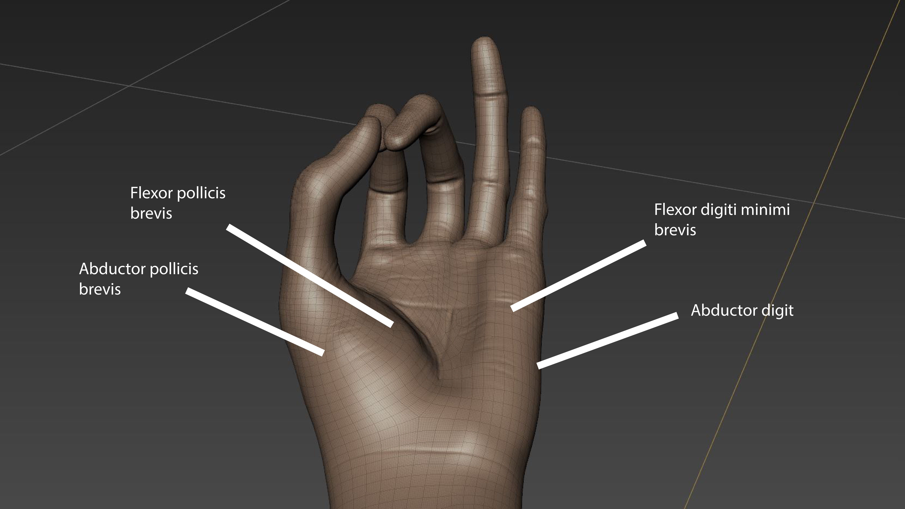
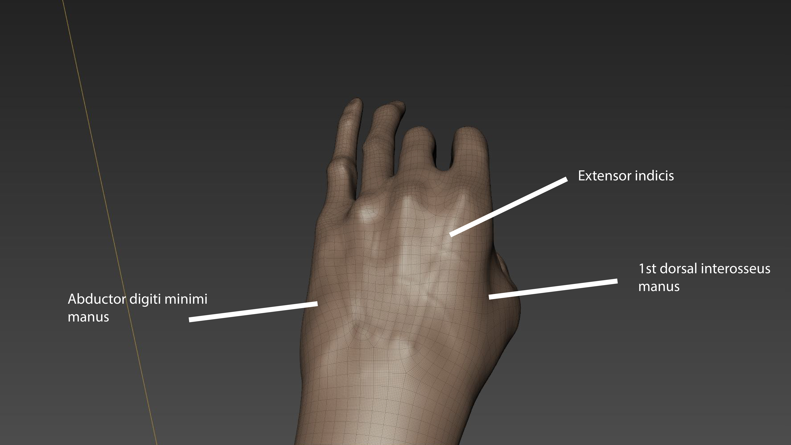

The Project:
Choose a body part (human hand or foot) and focus on sculpting.
What I learned:
Learned a lot more about how to make muscle structures and how it effects how it is sculpted. I learned a lot more about the hand than I thought I would.

